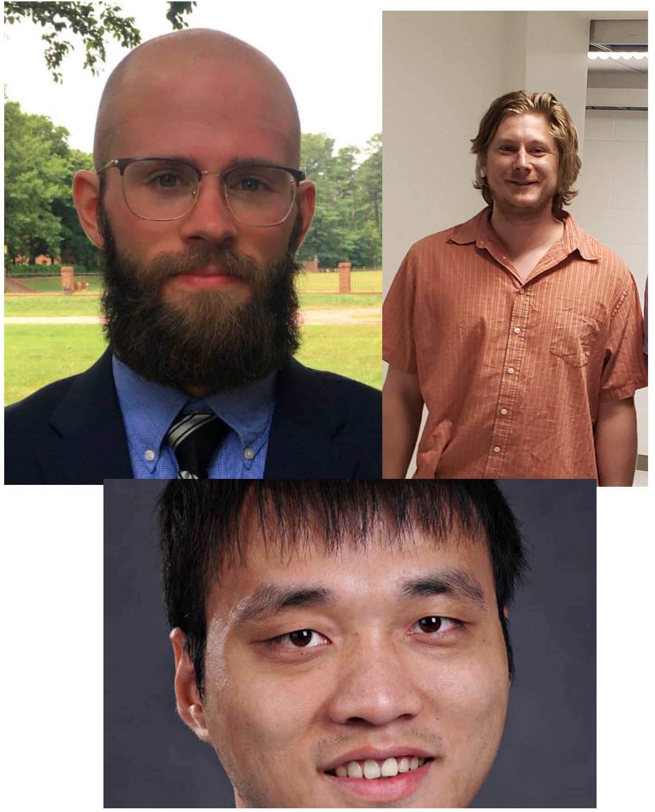

text text text
|  |
Congratulations to three new PhDs.Group members Colin Egerer, Chris Johnson and Yiyu Zhou recently successfully defended PhD theses entited, Forward & Off-Forward Parton Distributions from Lattice QCD, Excited J-- Resonances in Meson-Meson Scattering from Lattice QCD, and Proton Spin Structure from Simultaneous Monte Carlo Global QCD Analysis. They will next take their respective talents to Jefferson Lab, GSI Darmstadt, and UCLA/South China Normal Univeristy as postdoctoral fellows. Congratulations to them all! |